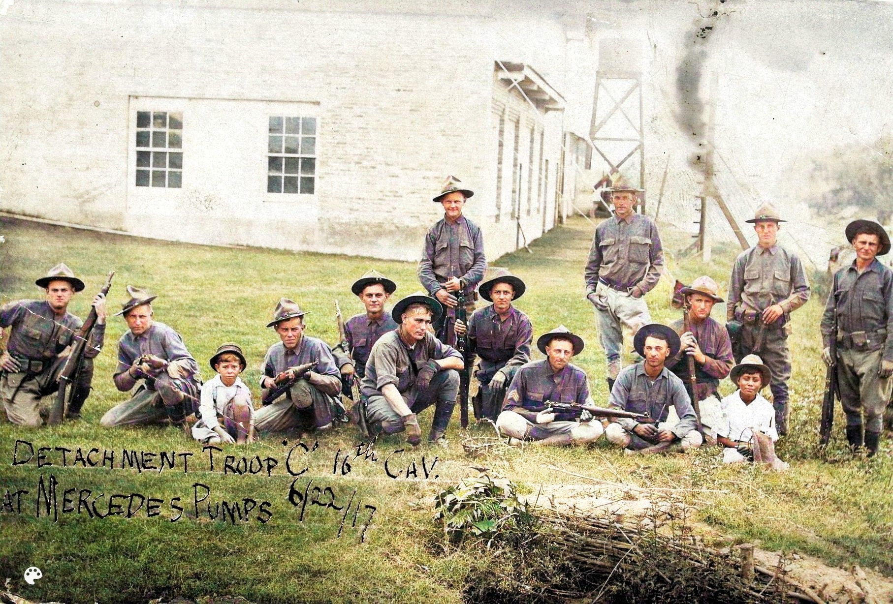
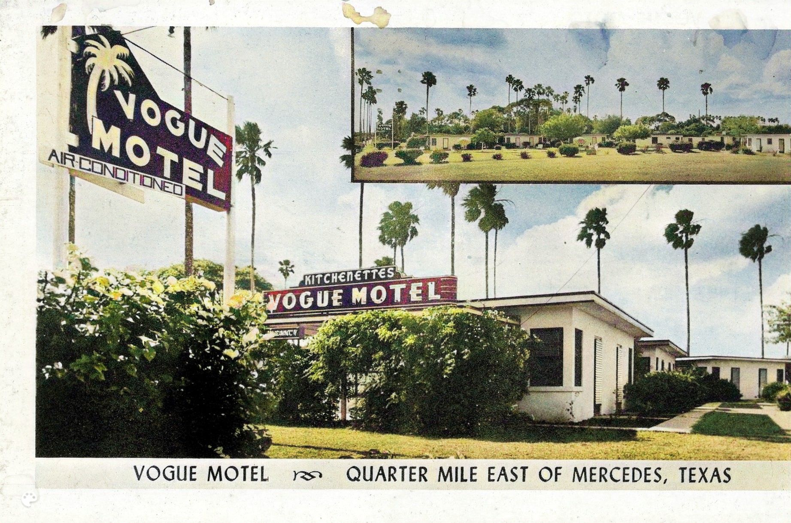
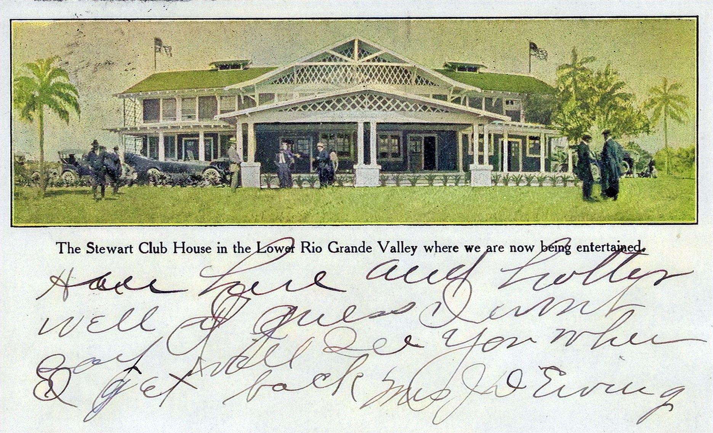

Rich Architecture of Mercedes Schools
Rich Architecture of Mercedes Schools
Lost and forgotten today, Buck School was the first public school building in Mercedes. However, several architecturally significant school buildings constructed between the 1920s and 1940s remain along Ohio Street. Among them are the Graham School, along with the former middle and high school buildings, which stand as historic landmarks.
View Schools Downtown Mercedes During the Early Days
Downtown Mercedes During the Early Days
Many businesses on Texas Avenue in Mercedes Early Days including drug stores, clothing stores, and hardware stores. Streetlights were first installed in 1918. Horses, carriages and automobiles shared Main Street.
View Downtown Landmark Mercedes Hotel Was Social Center
Landmark Mercedes Hotel Was Social Center
The grand Mercedes Hotel was built in 1907. The hotel hosted social events and served elegant meals for fifty years until it deteriorated and was demolished in 1957. Today a bank and parking lot occupy the site where the iconic hotel once thrived.
View Mercedes Hotel
Camp Mercedes Was WW1 Training Camp
General Pershing, the prominent World War I military leader, established a training camp for soldiers in Mercedes, Texas. The camp, situated next to the Main Canal off 10th Street, played a crucial role in preparing troops for the war. In addition to training soldiers, the camp was dedicated to training horses, which were vital for wartime efforts. The Texas Historical Commission placed a marker at the site in 2012.
View Camp Mercedes Camp Llano Grande Established in 1916
Camp Llano Grande Established in 1916
Camp Llano Grande was established in Mercedes in 1916 during President Woodrow Wilson's administration. It was one of several National Guard camps created under the National Defense Act to repel cross border raids led by Pancho Villa. Soldiers from Indiana
View Camp Llano Grande Irrigation System Still Used Today
Irrigation System Still Used Today
The American Rio Grande Land and Irrigation Company built a state of the art irrigation system in 1907. It pumped water from the Rio Grande River to farms and orchards. The irrigation is still in use today. The Main Canal can be seen at 10th and Capisallo Streets.
View Irrigation Early Business and Industry Boomed
Early Business and Industry Boomed
Early Mercedes industries included banking, brick Making, agriculture and beverage produEction. There was a active civic group that promoted Mercedes industry which later became the Chamber of Commerce.
View Industry Ranching Anchors Mercedes Heritage
Ranching Anchors Mercedes Heritage
The height of the Spanish colonial livestock economy in the Valley lasted from 1790 to 1900. Spanish Land Grant descendents owned the mid Rio Grande Valley lands, including the land that became Mercedes. Area ranches included Toluca, Tampacua, Anacuitas, Relampago, Los Ebanos.
View Ranch
Motels Flourished With Automobile Travel
As automobiles gained popularity motels were built in Mercedes to accommodate travelers with parking. The motels of Mercedes boasted lush tropical gardens and shuffleboard courts, offering an enjoyable experience for guests. All were located on old Highway 83.
View Motels Early Mercedes Events of Interest
Early Mercedes Events of Interest
Out of the ordinary events in the early days included fires, floods and frequent hurricanes. Early floods did little dammage as there were few buildings on the town. There were also concerts, social and civic events.
View Events Mercedes Landmarks Honored Fuste
Mercedes Landmarks Honored Fuste
Throughout Mercedes history, the name Fuste has been associated with a variety of landmarks and has appeared in several spellings, including Fusti, Fuste, Fuesti, and Fueste. The Fusti Ranch was originally owned by the heirs of Spanish land grantee Ynojosa de BallÃ. A ravine that drained the ranch and surrounding area into the Arroyo Colorado became known as El Fuste.
In 1907, during the construction of the Mercedes Main Canal, a structure built across this ravine was named the El Fuste Syphon. Over time, a neighborhood grew on the land once part of the ranch, and it too came to be called El Fuste.
Residents later attempted to incorporate the area as a separate city under the name El Fueste, but these efforts were unsuccessful. In 1960, the neighborhood was officially annexed by the city of Mercedes.
At various points in time, El Fuste has referred to a ranch, a ravine, a concrete drain, a neighborhood, and even a proposed city—highlighting its deep-rooted connection to the region's history.
View Fuste Colegio Generated Transformation and Controversy
Colegio Generated Transformation and Controversy
As the Hispanic political movement gained momentum in the 1970s Antioch College established Colegio Jacinto Trevino in Mercedes. By fostering the development of Hispanic leaders and encouraging them to challenge the political system the college generated both controversy and transformation. The local newspaper chronicled events related to Colegio from 1970 to 1973 providing a timeline that highlights the contentious dynamics between the college supporters and detractors including the local Baptist preacher. The college was housed in this historic building which stood at the corner of Missouri and 3rd Street. It burned down in 1977 under suspicious circumstances and was demolished.
View Colegio Rio Rico Shaped by River Redirection
The community known as Rio Rico was originally north of the Rio Grande River on land surrounded by a bend in the river. In July 1906 the American Rio Grande Land and Irrigation Company built a cutoff to direct the river into a more direct course. As a result RÃo Rico came to be located south of the border in Mexico. No longer clearly part of either the United States or Mexico RÃo Rico became a lawless territory where gambling dance halls and saloons flourished. The saloons and gambling are long gone but the small community of Rio Rico remains across the border 7 miles south of Mercedes.
View Rio Rico Various Types of Early Mercedes Homes
Early Mercedes homes featured a variety of architectural styles, including Jacales, Spanish Colonial, and Mission Revival. Many of these historic homes remain in the Mercedes Historic District on Missouri Street.
View Homes  City Park Graced Mercedes for Four Decades
City Park Graced Mercedes for Four Decades
Mercedes City Park was designed like traditional Mexican plaza, covering a full city block with a central bandstand as its focal point. Located just south of the train station on Missouri Street, the park served as a community hub for many years before being sold for commercial development in 1950.
View City Park Attractions, and Annual Events of Mercedes
Attractions, and Annual Events of Mercedes
Mercedes boasted a variety of attractions, including restaurants and movie theaters. The city became known for the annual RGV Livestock Show and Cover Girl Pageant which still continue to this day.
View Entertainment
Developers Built Clubhouses in Mercedes
Land developers built clubhouses to attract buyers, offering upscale amenities. Stewart Clubhouse located Southeast of Mercedes was the most noted of these, but it is no longer standing. Several others including the Llano Grande Club house are still standing today.
View Clubhouses Robust Infracture Drove Development
Robust Infracture Drove Development
Mercedes had robust infrastructure. Important infrastructure included a railroad depot, City Hall and Firestation, telephone builiding, power plant and a small airport. Many of these buildings can still be seen today.
View Infrastructure Natural Life in the Lower Rio Grande Valley
Natural Life in the Lower Rio Grande Valley
The Lower Rio Grande Valley, referred to in Spanish as El Valle del RÃo Grande, lies along the U.S.-Mexico border in a floodplain of the Rio Grande River. While the region has seen a decline in biodiversity due to habitat loss, many species of birds and wildlife can still be found.
View Nature Hospital and Churches Established in Mercedes
Hospital and Churches Established in Mercedes
In 1922, the Elks Club established a hospital, and the town was home to several doctors. Mercedes also boasted a variety of small churches, including Lutheran, Presbyterian, Methodist, and Baptist congregations, as well as a large Catholic church.
View Body and Soul Rich Agricultural Heritage
Rich Agricultural Heritage
Agriculture served as the economic backbone of early Mercedes, with cotton and livestock setting record production levels alongside citrus and winter vegetable production. Cotton gins and packing plants were established to process crops for market. The Rio Grande Valley Livestock Show has been a staple event in Mercedes for over 80 years, showcasing the region agricultural heritage.
View Agriculture Citations and Bibliography
Citations and Bibliography
The information on this website is derived from over 100 sources, with the local newspaper serving as the primary reference. Additionally, numerous books, articles, and websites have contributed valuable insights. We have made every effort to properly acknowledge these sources on the Citations page.
View Citations